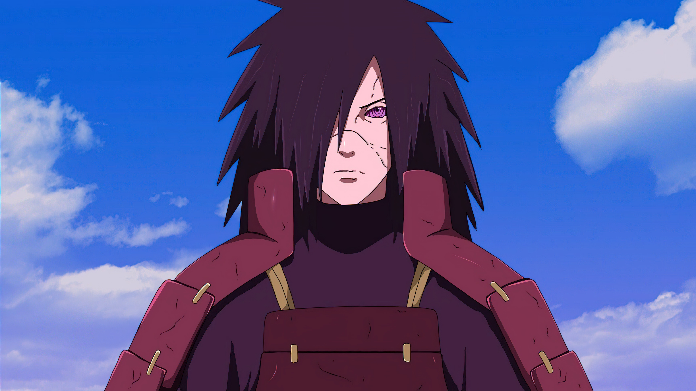

Overview
Madara Uchiha is one of the primary antagonists in the Naruto manga and anime series created by Masashi Kishimoto. He is a legendary shinobi of the Uchiha clan and one of the co-founders of the Hidden Leaf Village alongside Hashirama Senju.
Early Life
Madara was born during a time of constant war between ninja clans. As a child, he befriended Hashirama Senju,
but their friendship was torn apart by the long-standing conflict between the Uchiha and Senju clans.
After losing his brothers, especially Izuna, Madara grew bitter and came to believe that true peace could
never be achieved through trust alone.
Founding of Konoha
Madara and Hashirama eventually set aside their rivalry to create Konohagakure, the Village Hidden in the Leaves. While Hashirama believed in cooperation and compassion, Madara favored strength and control. Their conflicting ideologies caused Madara to abandon the village.
Personality
Madara is known for being:
Though feared as a villain, Madara believes his actions are justified and necessary to end suffering.
Goals and Ideology
Madara believes that the world is trapped in an endless cycle of hatred and war. To end this, he plans to cast the Infinite Tsukuyomi, a powerful genjutsu that would trap all humanity in an eternal dream, creating what he believes to be a peaceful world.
Powers and Abilities
Madara is regarded as one of the strongest shinobi in history. His abilities include:
His combat power overwhelms even the strongest ninja and entire armies.
Fourth Great Ninja War
Madara is resurrected during the Fourth Great Ninja War and quickly proves unstoppable. He defeats the Five Kage, battles the Allied Shinobi Forces, and becomes the central threat of the war. His presence alone shifts the balance of power.
Downfall
After successfully casting the Infinite Tsukuyomi, Madara is betrayed by Black Zetsu, who reveals that Madara was only a pawn in Kaguya Ōtsutsuki's revival. Stripped of his power, Madara meets his end after one final conversation with Hashirama.
Legacy
Madara Uchiha represents:
Madara remains one of the most iconic villains in anime history, remembered for his overwhelming strength, complex ideology, and deep connection to the Naruto storyline.